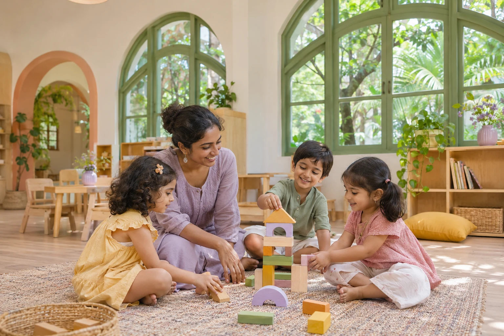
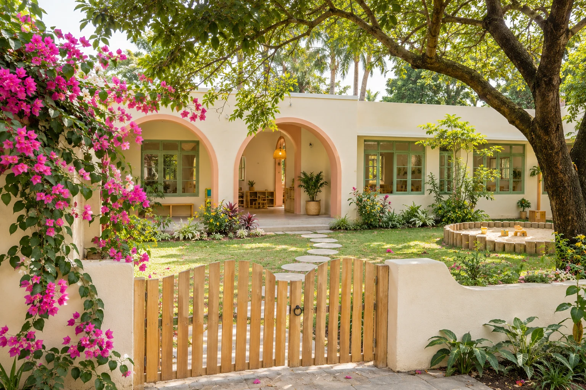
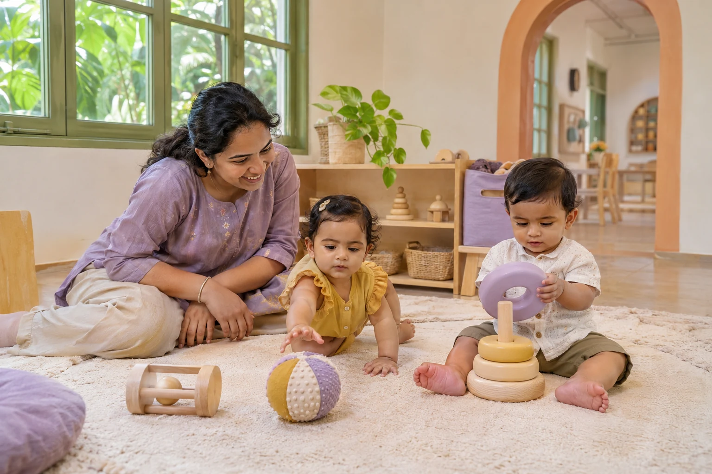
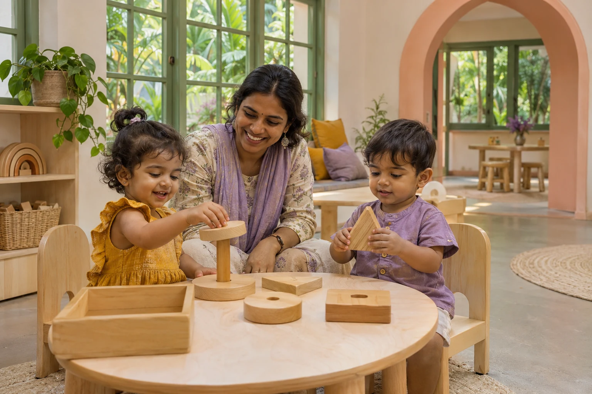
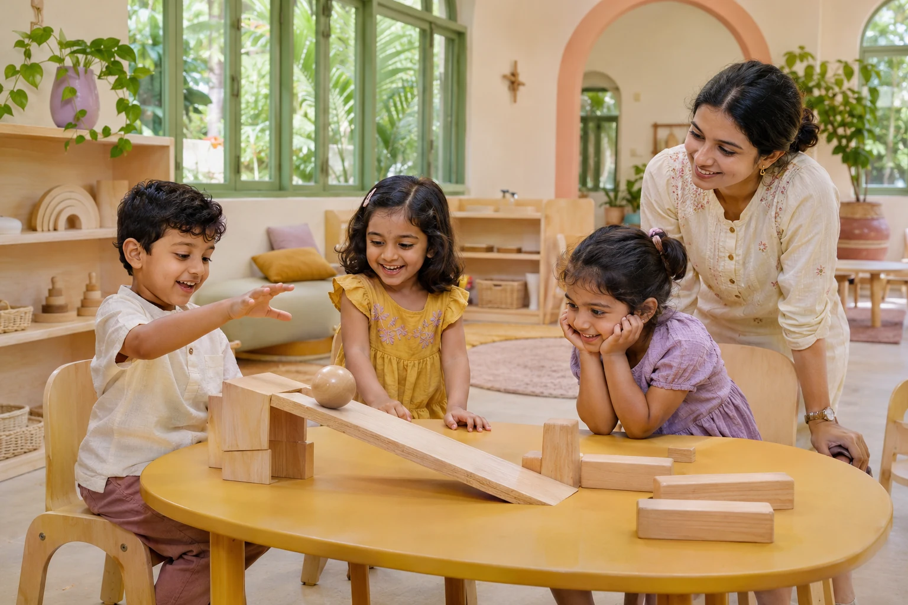

Play is serious learning.
Open-ended materials and hands-on experiences turn “what if?” into “I did it!”
Play-based discoveryFor the muddy hands, the mighty questions,
and the little people becoming themselves.


Your child’sChildhood is a time for doing, wondering and trying again.
We make space for all of it, with a caring grown-up close by.
Open-ended materials and hands-on experiences turn “what if?” into “I did it!”
Play-based discoveryMontessori-inspired spaces encourage independence, at a pace that feels right.
Child-led confidenceEnglish learning with Kannada songs and stories, familiar routines and warm connections.
A welcoming little communityFrom first discoveries to “I can do it myself.”
Find the right starting place for your child.

6–18 monthsA gentle beginning, with care that follows their rhythm.

18–36 monthsA little independence. A whole lot of discovery.

3–5 yearsReady for school. Still wonderfully little.
After-school clubs & seasonal camps · Ages 3–6 · Flexible enrichment
The schedules shown are illustrative. We’ll talk through your child’s needs and available places during your visit.
Enough routine to feel safe. Enough freedom to find something new.
A warm welcome, time to settle, and the freedom to choose a favourite activity. Every child gets a beginning that feels like theirs.
Sunlit corners, leafy adventures, and little details
that put children at the centre.
A welcoming entrance, a little greenery and a path to a day full of possibilities.
Safety is a conversation, too. Ask us on your tour.
The questions are real. These parent stories show the kinds of conversations we want to have.
Illustrative parent storiesI was worried about the goodbye. They gave us time, small steps and a familiar face. Now the first thing she asks is, “Is it a school day?”
Review ratings, awards and accreditation marks will be added after verification.
You know your child best. We’ll listen first, show you around, and help you explore what feels right.
Let’s find a time to meetMeet the educators, see the spaces and bring every question.
Share their interests, routines and what a good day looks like.
Discuss the right program, current places and a gentle settling-in plan.
A few things to look forward to.
Sample events & reading for this preschool preview.
Meet the team. Look around.Find your little happy place.
Paint, paper & imagination.A colourful family morning.
Gentler preschool goodbyes.Small steps. Big reassurance.
See the little corners. Meet the kind faces.
Imagine the possibilities.
Every child settles differently. On your tour, we can discuss familiar routines, shorter settling-in visits and how educators keep families informed.
Toddler toilet learning is a partnership with families. Ask about program expectations, care arrangements and how we follow your child’s readiness.
Yes. Bring your questions about food, allergies, sleep and individual needs to your visit. Specific arrangements must be agreed with the school before enrollment.
Use Enrollment Status for an illustrative program overview. Actual places, fees, licensing and program details would be shared directly by the school before enrollment.